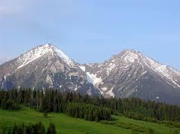

7.11.2025
Dodałem opis jaskini "Zbójnicka Jama" znajdującej się w Gorcach.
Można o niej przeczytać więcej w zakładce Gorce - ciekawe miejsca.
18.11.2025
Dodałem opis polecanej trasy w Bieszczadach: na Tarnicę z Wołosatych. Trasa ta obfituje w przepiękne widoki i nie jest wymagająca.
Dokładny opis trasy znajduje się w zakładce Bieszczady - charakterystyka.
26.11.2025
Rozwinąłem opis przyrody Beskidu Wyspowego, dodając informacje o występujących tam rzadkich okazach roślin oraz grzybów.
Szczegółowy opis przyrody Beskidu Wyspowego znajduje się w zakładce Beskid Wyspowy - przyroda.
